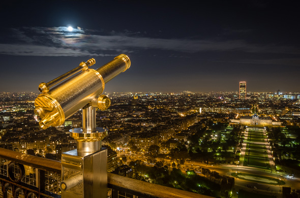

LE 2EME ETAGE
L'arriveé au deuxième étage par un éblouissemant : Paris offre sa splendeur à vos yeux ébahis. Vous profiterez d'une vue totalement dégagée sur tous les monuments de la capitale française : Le louvre, Le grand Palais, Les boucles de la seine, Notre Dame,...Le deuxième étage est aussi celui de l'éblouiisement des papilles avec notre restaurant étoilé, Le Jules Verne.

